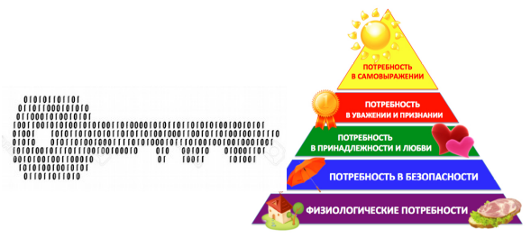

Электронный учебник создается по общеобразовательной программе “Стандарт. 9 класс” для учеников, начинающих изучать информатику с 9 класса.
9.1 1 СЕНТ-25 СЕНТ¶
Информация. Информационные процессы и системы.¶
Цели курса:
Научиться
объяснять:
- понятие информации, данных, информационного сообщения;
- понятие об информационной избыточности сообщений;
- понятие информационной системы;
- понятие аппаратного и программного обеспечения;
- понятие информационной культуры и информатической компетентности;
- понятие об информатике как науке и область деятельности человека;
- способы представления сообщений;
- способы оценки количества информации;
- разновидности информационных процессов: получение, сбор, хранение, поиск, обработка и передача информации;
- этапы развития и сферы применения информационных технологий;
- разновидности информационных систем;
- структуру информационной системы;
- виды сообщений;
- единицам измерения длины двоичного кода: бита, байта, килобайта, мегабайта, гигабайта, терабайта;
- определять длину двоичного кода сообщения.
Информация¶
Задание №1. Какова природа информации?¶
Найдите высказывание одного выдающегося американского ученого о природе информации и запишите его здесь.Задание №2. В чем ценность информации?¶
Определить, что такое информация, не так-то просто. Посмотрите на картинки и подумайте, какую информацию человек получает в каждой ситуации и зачем она ему нужна?
{kind=link}
Если обобщить, то информация нужна человеку для того, чтобы он мог наилучшим образом удовлетворять свои потребности: поесть и не отравиться, перемещаться в пространстве и не пострадать при этом и проч. Все человеческие потребности можно распределить по группам. Рассмотрите пирамиду потребностей психолога А. Маслоу:
{kind=link}
Важно
Информация - ценность, необходимая человеку для качественного удовлетворения своих жизненных потребностей.
Восприятие информации¶
Задание №3. Как человек воспринимает информацию?¶
Человек воспринимает информацию из окружающего мира с помощью органов чувств. Выполните упражнение, чтобы разобраться, как это происходит.Задание №4. Как человек оценивает информацию?¶
Вся воспринимаемая информация оценивается человеком по определенным критериям (стр.14). С помощью указанных ниже комбинаций клавиш переместите пояснения к критериям оценки информации, потому что они размещены неправильно.
- выделение всех слов Ctrl A
- выделение одной строки Shift End или Shift Home
- копирование выделенного текста Ctrl C
- вырезание выделенного текста Ctrl X
- вставка скопированного текста Ctrl V
Передача (и сохранение) информации¶
Задание №5. Как человек передает информацию?¶
Человек не только воспринимает и оценивает информацию, но и при необходимости передает ее посредством сообщения.
Важно
Информационное сообщение — это информация, которую можно отделить от прочей информации.
{kind=link}
Если сообщение передается и при этом не сохраняется, то такой способ передачи называется аналоговым. Если сообщение передается и сохраняется, то это дискретный способ. Для сохранения информации используются системы символов, такие как буквы, числа, нотная запись и проч.
Задание №6. Какими способами какие виды сообщений могут быть переданы?¶
Выполните упражнение, чтобы разобраться со способами передачи сообщений и видами сообщений.Важно
Данные — информация, сохраненная на специальном носителе (бумаге, флешке, диске).
Кодирование — преобразование аналогового сообщения (например, речи) в дискретное с помощью системы символов (например, в текст), или перевод сообщения из одной дискретной формы в другую (например, текст в цифры).
Избыточность сообщения — величина, показывающая, во сколько раз может быть короче сообщение, в котором закодирована та же информация.
Задание №7. Что означают слова “дискретный” и “аналоговый”?¶
Узнайте, почему сохраняемое сообщение называется именно словом дискретный, а несохраняемое — словом аналоговый?Задание №8. Как схематично изобразить способы передачи и виды сообщений?¶
Запустите программу LibreOffice Impress. Составьте схему «Способы передачи сообщений» с примерами (видами сообщений).
Домашнее задание¶
Подготовьтесь к устному опросу. Возможные вопросы:
- Какова природа информации?
- В чем ценность информации?
- Объясните, что такое информация.
- Как человек воспринимает информацию?
- Перечислите виды информации, которые человек воспринимает с помощью органов чувств.
- Как человек оценивает информацию?
- Объясните, что значит каждый из критериев, по которым оценивается информация.
- Какой комбинацией клавиш можно выделить весь текст?
- Какой комбинацией клавиш можно выделить одну строку?
- Какой комбинацией клавиш можно скопировать выделенное?
- Какой комбинацией клавиш можно вырезать выделенное?
- Какой комбинацией клавиш можно вставить выделенное?
- Как человек передает информацию?
- Что такое сообщение?
- Какие способы передачи сообщений вы знаете?
- Чем отличается аналоговый способ передачи сообщений от дискретного?
- Назовите виды сообщений, которые передаются аналоговым и дискретным способом.
- Что такое данные?
- Что такое кодирование? Приведите примеры.
- Что такое избыточность сообщения?